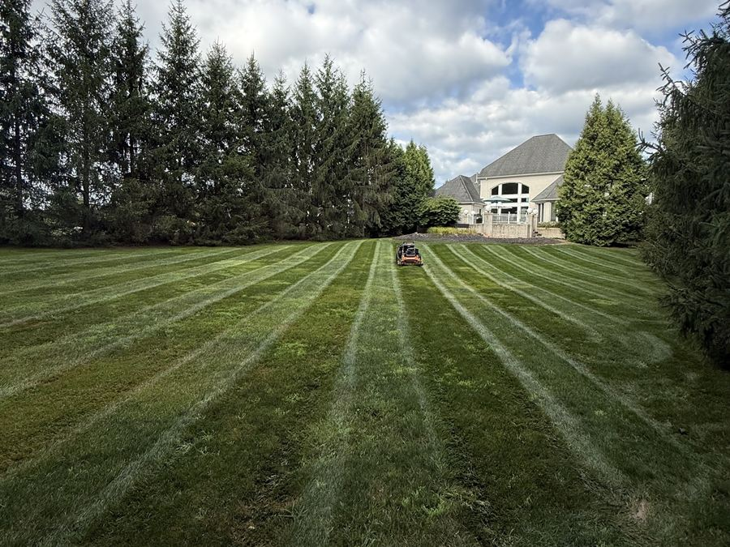
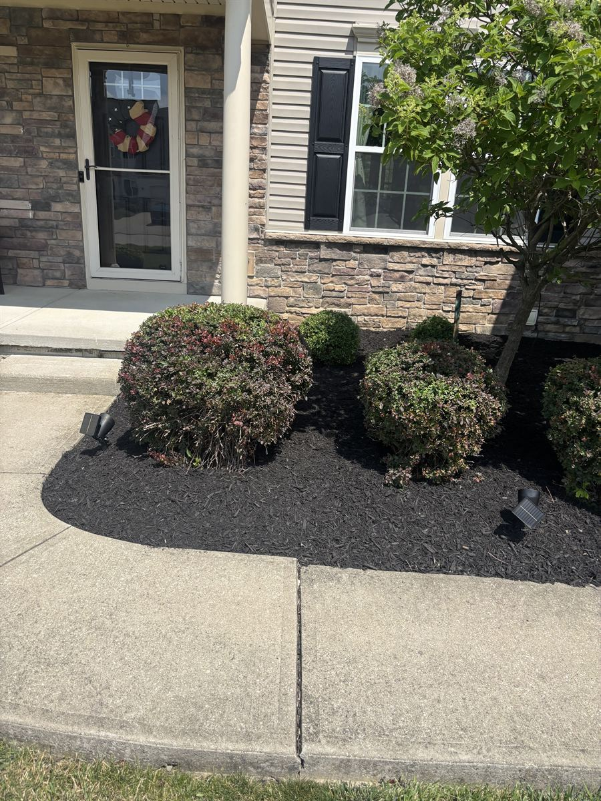
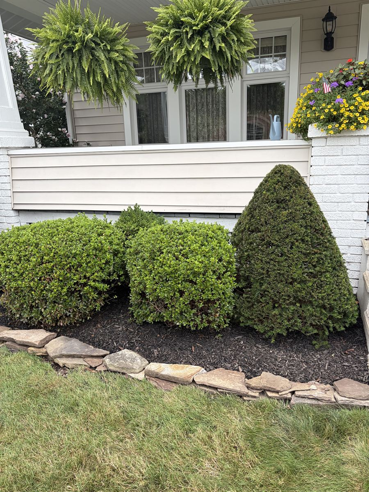
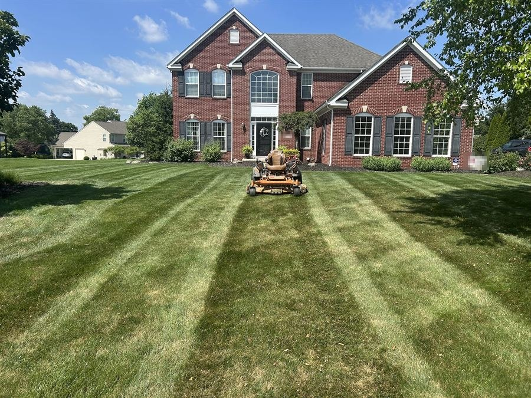
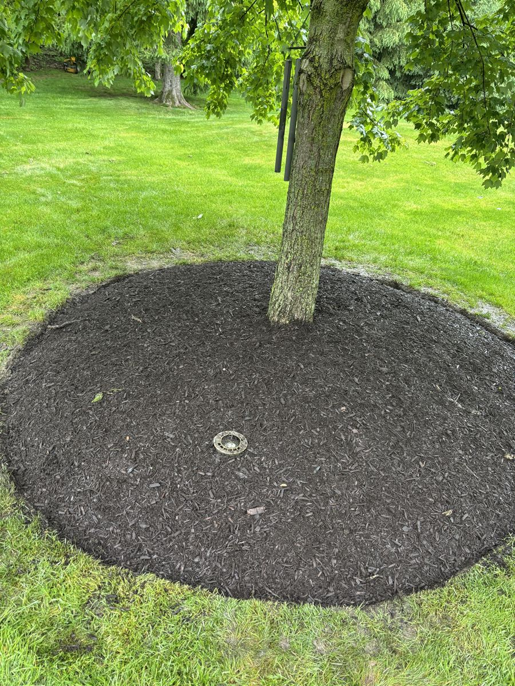
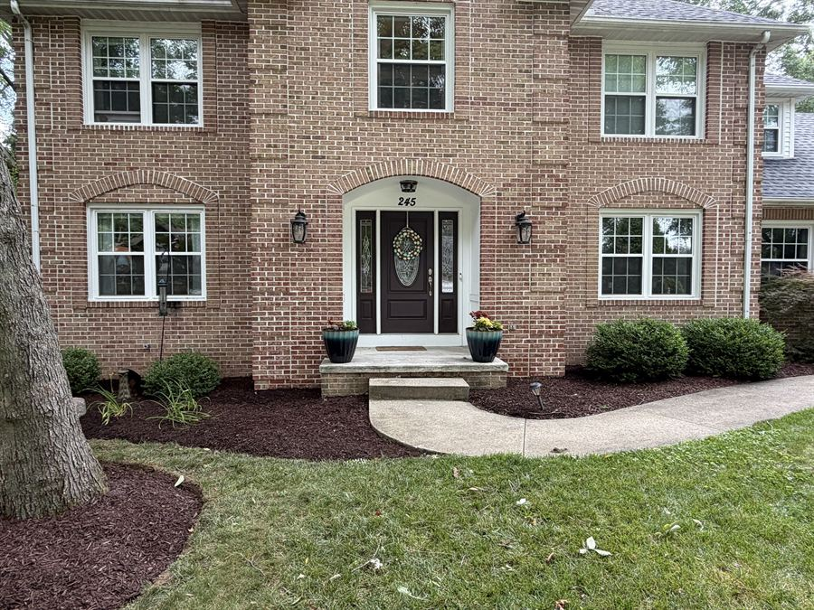

Doing it yourself
- No checklist
- Missed it? You fix it
- Costs your weekends
- You know who's coming
- Mow, edge and blow it yourself
- Leaves fill your fall
- Haul your own mulch
- Rent an aerator

Richfield, Ohio
Weekly mowing and cleanups around Richfield. We check your yard 5 ways before we pull out of the driveway.
Admit one yard2027 season pass
Pay the season up front
Save5%by Mar 31
days left to save
Pay for the whole 2027 season by March 31. That's the day before we start mowing.
Save my 2027 spot Or call Harrison: (440) 667-9642Before you hire anyone





"I've been able to get a quote, agreed price, and had the work scheduled and done in a matter of days."

Takes 30 seconds. You don't have to be home.
Almost done. Hit send in your text app.
Harrison texts you back today. Didn't open? Text (440) 667-9642 or email us.
We mow all summer and clean up in spring and fall. You don't have to call us every season.

Same day every week. We edge and blow off the drive every time.
See how it works
One price for the whole leaf season. We keep coming back till it's clear.
See the Fall Pass
We pull the weeds first. Then fresh mulch and a sharp edge.
See how it works
Sticks and dead leaves gone before your first mow.
See how it works
The right plant in the right spot. Planned before we plant.
Get a custom designFive Before We Drive.
5 checks on every yard before we leave.Miss one? We're back free.
The next day. If it rains, the next dry day.We find the problem first.
We check your yard and show you what's wrong. Seeing it costs you nothing.30 days to be sure.
Not happy in the first 30 days? Cancel and get back what you didn't use.Pay up front. Save 5%.
Pay for the season before it starts. It's all covered by the guarantee.Our crew wears jerseys.
You earn yours. Name and number on the back.Why Grass 'n' Gardens
The plain version
Everything we do, side by side.
Us
60 Google reviews. 0 under five.
Compared October 2026, from what local crews and mowing apps list on their own sites. Rather talk it through? Call Harrison at (440) 667-9642.
Check 1 of 5
Every walk, drive and bed gets a sharp line.
Check 2 of 5
No clippings on the drive, the walk or the porch.
Check 3 of 5
We take our stuff and the trash with us.
Check 4 of 5
Your dog stays in. We check every gate on the way out.
Check 5 of 5
No piles of wet grass sitting on your lawn.
Miss one? Text us. We're back the next day, for free. If it rains, the next dry day.
Text (440) 667-9642Record60 reviews5.0 average0 under five

Fall cleanup. One visit. Beds cleared, leaves gone, walk blown clean.





Want yours to look like this?
Text us a photoHarrisonOwner
Meet the owner
I started Grass 'n' Gardens in 2026. I was 18.
I went to Revere High School. Now I'm in college in Akron, and I still run the business.
At first I took any job I could get. Long days. I learned the work by doing it.
Why landscaping? I was taught to never start too many things at once. If you're busy with a bunch of businesses, you never win at any of them. So I picked one. This is it.
Now I've got a crew. Every guy earns his jersey. And every yard gets checked before we pull out of your driveway.
Where we work
Not on the list? Call us. We might still come out.
HOA or business property?
Same five checks. Same guarantee. One contract for the whole property.
See what our bid includes Call (440) 667-9642Questions
Don't see yours? Text Harrison. He texts back from his own phone.
Text HarrisonUpdated October 2026
It depends on your yard: how big it is and how much we trim around. Send us your address and Harrison looks your yard up on the map and texts you a price today. You don't have to be home, and nobody has to come out first. Get my yard plan
Grass 'n' Gardens is based in Richfield, Ohio. We serve Richfield and nearby towns, including Bath, Hinckley, Granger, Brecksville, Broadview Heights, North Royalton, Akron, and Medina. Not on the list? Call us. We might still come out.
Yes. Grass 'n' Gardens is insured.
Lawn mowing and weekly maintenance, garden design and planting, mulching and bed cleanup, spring and fall cleanups, edging and trimming, shrub and hedge pruning, leaf removal, commercial property care, retaining wall installation, paver patios, and custom landscape design and construction.
More on each: Weekly mowing Fall cleanups Spring cleanups Mulch and beds Yard design
Our 2027 mowing season starts April 1. Pay for the whole season by March 31 and save 5%. See the Season Pass
Yes. We mow, trim bushes, lay mulch, aerate, fertilize, clean up leaves, cut small trees and plow snow. It all goes on one plan for the whole year.
Call or text (440) 667-9642, email grassngardens4u@gmail.com, or fill out the yard plan form on this page. Estimates are free and we respond promptly.
We come the next dry day. That's our guarantee: if we ever miss your mow, we're back the next day, free.
No. We look your yard up on the map to price it. If we walk your yard, it takes about 20 minutes, and you don't have to be home for that either.
No. You get 30 days from your first mow to be sure. Not happy? Cancel and get back what you didn't use.
As soon as the leaves start coming down. Ohio State says leaves shouldn't sit on grass for more than two weeks, or the grass under them gets weak and yellow. Our Fall Pass is one price for the whole leaf season. We keep coming back till it's clear. See the Fall Pass
It's our promise. Before we pull out of your driveway, we check your yard 5 ways: edges crisp, everything blown clean, nothing left behind, gates latched, and no clumps. See the 5 checks
The crew starts at 6:30 AM, Monday through Saturday.
Yes. We maintain both residential and commercial properties across Summit and Medina counties, including regular mowing, bed care, and seasonal cleanups.
Yes. We build retaining walls and paver patios and handle full custom landscape design and construction alongside routine lawn and garden care. See yard design
Grass 'n' Gardens was founded by Harrison Drvenkar, a Richfield, Ohio local, and holds a 5.0-star Google rating across 60 reviews. Meet Harrison
I'll walk your yard and write out your whole year. Takes 20 minutes and you don't have to be home. You get it in a day and it's yours to keep, even if you stay with the guy you have now.
(440) 667-9642Crew starts at 6:30 AM, Monday to Saturday.